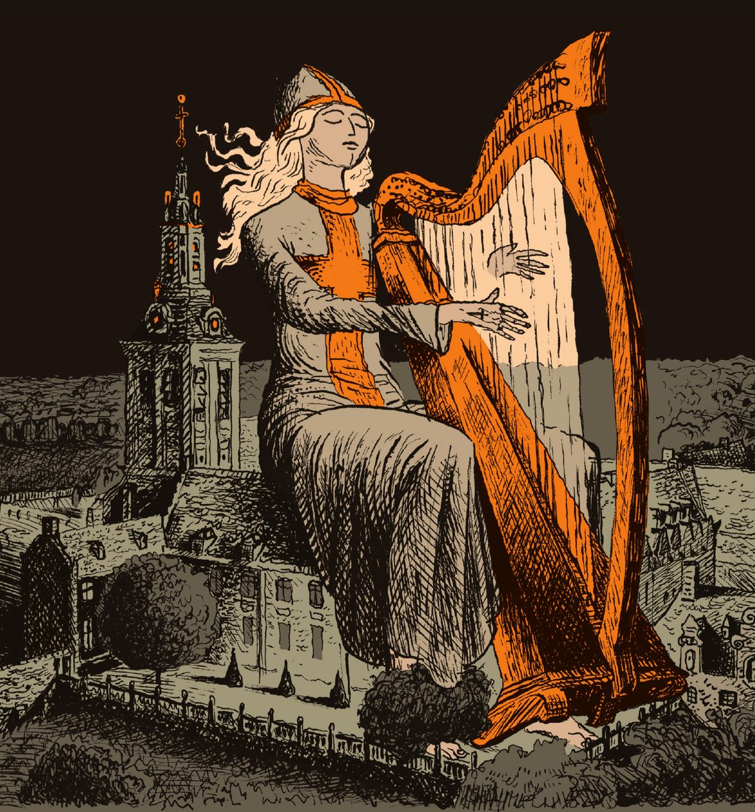

Naar het verhaal van Felix Timmermans uit 1924. Drie schooiers trekken als driekoningen door het winterse Kempenlandschap: een vertelling over armoede, schuld en genade, sober en akoestisch gebracht.
← Producties
Kersttournee 2027, data in optie
En waar de ster bleef stille staan
Reineke Van Hooreweghe, Toon Van Mierlo en een 15-koppig orkest
Naar het verhaal van Felix Timmermans uit 1924. Drie schooiers trekken als driekoningen door het winterse Kempenlandschap: een vertelling over armoede, schuld en genade, sober en akoestisch gebracht.
